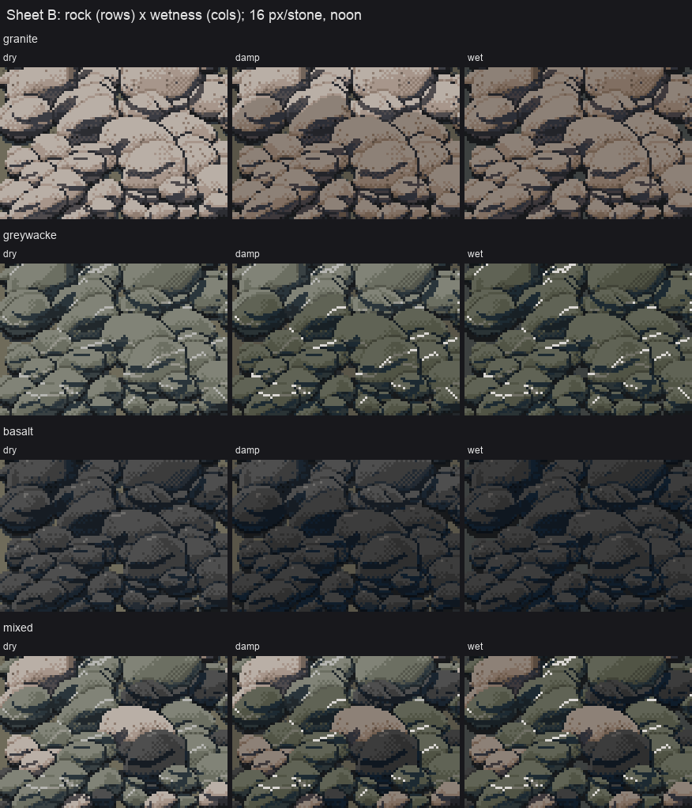
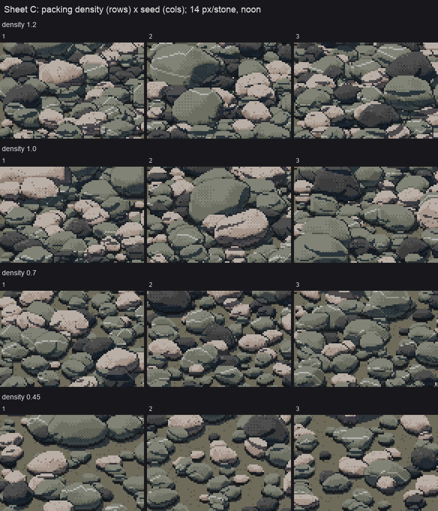
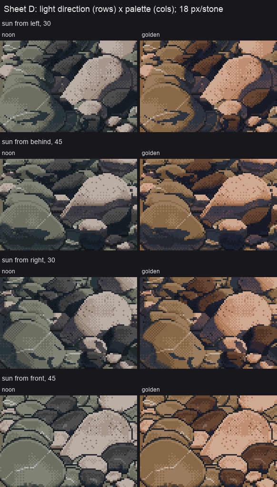

10. The technique as one call, and the sheets
When: you want gravel for a scene, or you want to check that the technique holds across every parameter, not just the one you tuned.
One call (cobbles_api.paint_patch)
def paint_patch(W=96, H=64, rock='mixed', size_m=0.12, wet=0.0, density=1.0, sun=None, hour='noon',
px_per_stone=16, seed=0, depth_ratio=1.0):
sun = sun or HOUR_SUN[hour]
ppm = px_per_stone / size_m
cv, info = bar(W=W, H=H, sun=sun, seed=seed, head_m=size_m, tail_m=size_m,
px_per_m_far=ppm / depth_ratio, px_per_m_near=ppm, density=density, mix=MIXES[rock],
size_sd=0.4)
if wet > 0:
...
if wet < 0.5 and info is not None:
# damp: whole stones whose base lies in the lower part of the patch (per stone,
# never a ruled line through a stone)
cv.wet[:] = 0
for i in info['order']:
m = info['vis'][i]
ys = np.nonzero(m)[0]
if len(ys) and ys.max() > H * (1 - 2 * wet):
cv.wet[m] = 1
g = cv.mat < 0
cv.step[g] = np.maximum(cv.step[g] - int(round(wet * 2)), 0)
return cv.render(hour)
The parameters:
rock:'granite','greywacke','basalt', or'mixed'(55/25/20, a braided-river bar).size_m: the median clast size in metres.px_per_stone: the median stone's size in pixels. This is the distance knob, and it picks the mark classes (page 4).wet: 0 dry, 0.3 damp (whole stones near the bottom), 1 wet.density: 1 is clast-supported; lower values open up matrix between the stones.sun(azimuth, elevation) andhour(the palette).HOUR_SUNgives each hour a default sun.seed: everything random.
Everything else is the bar packer (page 8) with head size equal to tail size.
Sweeping it (stage7.py)
Each sheet is a grid of paint_patch cells rendered on four processes and labelled:
def job(kw):
return paint_patch(**{**CELL, **kw}) # CELL = dict(W=96, H=64)
def sheet(rows, cols, make, name, title_txt, s=3):
jobs = [make(r, c) for r in rows for c in cols]
with Pool(4) as p:
imgs = p.map(job, jobs)
...
sheet(['noon', 'morning', 'golden', 'dusk', 'overcast'], [40, 20, 10, 5, 2.5],
lambda r, c: dict(hour=r, px_per_stone=c, rock='mixed', seed=11),
'sheet_A_hour_x_distance.png', 'Sheet A: hour (rows) x px per median stone (cols); ...')

Sheet A: hour × distance. It reads as a gravel bar at every hour in the 20, 10 and 5 columns. At 40 px the neighbour-shadow hooks show (page 5).

Sheet B: rock × wetness, 16 px per stone. Damp is chosen per stone. My first version used a row threshold, which drew a ruled line straight through the stones.

Sheet C: packing density × seed. At 1.2 and 1.0 the stones pack. At 0.45 you get open-work gravel with matrix between.

Sheet D: light direction × palette. A new sun direction means a repaint (the index map encodes where the light comes from); a new hour is only a palette swap (page 6).
Sweeping is where the real faults show up. Sheet A found the leaded glass everywhere at once, where a single tuned cell had hidden it. Sheet B found the ruled damp line.
The fix that made it usable: one BLAS thread
My first bar didn't finish inside a two-minute timeout. I profiled one 12 px stone:
ncalls tottime cumtime filename:lineno(function)
1 0.001 0.218 stone.py:341(cobble_geom)
3 0.161 0.161 cobble.py:46(project) <- three tiny matmuls, 0.16 s
Three matrix products on a few thousand 3-vectors shouldn't take 160 ms. numpy's threaded BLAS was spinning up threads for tiny arrays, and competing with other students' jobs on the same machine. With one thread, the same stone took 0.017 s, 10–20× faster. run.sh in the study folder:
#!/bin/sh
# single-threaded BLAS: numpy's threaded matmul on small arrays is 10x SLOWER here (contention)
export OPENBLAS_NUM_THREADS=1 OMP_NUM_THREADS=1 MKL_NUM_THREADS=1 VECLIB_MAXIMUM_THREADS=1
cd "$(dirname "$0")" && exec nice -n 10 python3 "$@"
After that, a 240×140 bar with about 1,500 stones takes 50–70 s, and a whole sheet takes a few minutes on four processes. If your per-object work is many small matrix products, pin BLAS first and parallelise across processes, not threads.
Using it in a scene
paint_patch returns RGB. For a real scene you'd want the step canvas (bar() returns cv), so you can relight by palette and composite by material. You'd also want to drive head_m/tail_m, px_per_m_far/px_per_m_near and the waterline from the simulator's geometry instead of from constants.